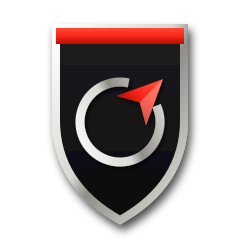

M7 — ИТОГ: ЗНАК, МАЛЫЙ ЗНАК, ГЕРБ
Три файла: mark-m7.svg, mark-m7-small.svg, crest-m7.svg.

LAST BERTH
шапка игры, малый знак
LAST BERTH
экран запуска
малый знак 16–32 px
полный знак (до 32 px — малый)
герб 40/64/96